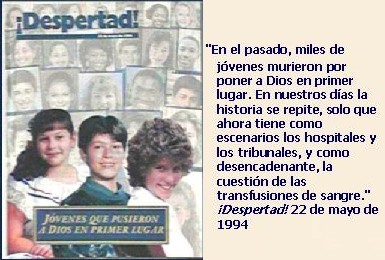

El 3 de junio de 2000, el diario nicaragüense “La Prensa”, narró la polémica entre los médicos del Hospital Berta Calderón y los representantes de la Watch Tower, por la muerte de la señora Mayra Beteta, por la negativa de ella y sus familiares a realizarse un transfusión sanguínea.
Una vez pasada la muerte de la señora Mayra, el representante de los Testigos de Jehová en Nicaragua, el señor Mike Shepherd, explicó las razones religiosas de su negativa a recibir transfusiones de sangre. Según el diario el señor Shepherd afirmó que “Los testigos de Jehová no se están muriendo por falta de sangre, los números reflejan que mueren más personas que reciben sangre que los que rehúsan recibir sangre…”
El doctor José Antonio Gavarrete, jefe de servicios ginecológicos del Hospital “Bertha Calderón” y quien atendió a la testigo de Jehová fallecida contradijo la explicación que dio Mike Shepherd sobre el tema de las transfusiones de sangre.
“Es mentira lo que ellos dicen, no tienen razón porque incluso esta paciente la manejamos con los líquidos que supuestamente ellos recomiendan como eritropoyetina (fármaco que estimula la producción de glóbulos rojos), y otras; con esa se manejó porque ellos la consiguen, y definitivamente la paciente no respondió en ningún momento”, afirmó el doctor.
“Definitivamente la única manera de salvarla, era la transfusión de sangre”. Y agregó que “no se puede ni hacer una comparación entre lo científico y lo religioso, aquí es lo científico contra el fanatismo”.
¿Cuál es la posición racionalista sobre la negativa de los Testigos de Jehová a las transfusiones sanguíneas?. A continuación se presentan cuatro razones por las cuales los racionalistas consideramos absurda esta doctrina.
1. La prohibición está basada en una concepción errónea de la naturaleza
En la cosmovisión de los pueblos semitas la vida se infundía (por dios) y residía en alguna parte. Es por está razón que encontramos en la Biblia versículos que dicen cosas como esta: “Pero carne con su vida, que es su sangre, no comeréis” Génesis 9:4. Los hebreos colocaron la vida residiendo en la sangre. Bajo la visión bíblica, los hongos, bacterios, protozoos y plantas no tienen vida. Note el antropocentrismo de la Biblia, ya que se le otorga la condición de vivo al ser humano porque tiene sangre y bajo este parámetro se mide al resto de organismos, sin tener en cuenta la gran diversidad de seres vivos que existen.
La sangre es un tejido animal, de la misma manera que lo es el tejido muscular o el esquelético. Considerar la sangre no como un tejido (grupo de células especializadas en una determinada función) sino como la esencia de lo vivo es una visión que para nada se fundamenta en la evidencia. Al fin de cuentas un cactus es un ser vivo y no tiene sangre.
El versículo de Génesis 9:4 es utilizado con mucha frecuencia en las revistas de los Testigos de Jehová (Despertad y Atalaya) para objetar el uso de la sangre. Pero aferrarse a este versículo y considerarlo como cierto implica pensar que la vida no es el resultado de una organización particular de la materia que forma a un organismo, sino que es algo aparte de la materia que reside en alguna parte.
Aunque definir “la vida” es algo muy complejo, me permitiré mencionar una definición dada por el bioquímico Gerald Joyce para la National Geographic: “Un sistema químico que se sostiene a sí mismo y que es susceptible de sufrir evolución darviniana”. Como la sola definición no resulta muy clara para la mayoría de las personas, haré una pequeña explicación: Al decir que la vida es un sistema químico deja ver que todos los seres vivos están compuestos por elementos químicos (C, H, O, P, N, S, etc) que forman moléculas (azúcares, proteínas, aminoácidos, ácidos nucleicos, etc.). Al decir que se mantiene a si mismo, se quiere decir que el sistema puede regular sus funciones, y por último la definición nos dice que “es susceptible de sufrir evolución darviniana”, lo cual significa que tales sistemas químicos cambian con el tiempo como resultado a la reproducción diferencial de unos organismos, con características ventajosas, respecto a otros. Como podemos ver la concepción actual que tenemos de la vida está muy lejos de la que se puede deducir de Génesis 9:4
Note como a partir de la visión arcaica de Génesis 9:4 los Testigos de Jehová construyen la prohibición de las transfusiones de sangre, con las mortíferas consecuencias que esto ha resultado para cientos de niños inocentes.
2. La prohibición es irracional porque pone en peligro la vida humana
La principal razón que lleva a los incrédulos a denunciar este tipo de creencias, es la forma absurda como se pone en peligro la vida de las personas. En términos racionales no hay diferencia alguna entre dejar morir a un familiar al negársele una transfusión de sangre por no desagradar a Jehová dios y la de sacrificarlo a algún otro dios para clamar por el fin de un huracán o el apaciguamiento de un volcán, como lo hacían los pueblos primitivos.
En la siguiente imagen podrá observar la portada de la revista “Despertad” del 22 de mayo de 1994 dedicada a los jóvenes que murieron por seguir a ciegas está absurda enseñanza.
¿Lamentable, verdad?
3. La prohibición es un invento del Cuerpo Gobernante de los Testigos de Jehová
La doctrina que establece que este tratamiento médico es “pecado” no fue establecida por el fundador de la denominación religiosa, Charles Russel, sino que fue establecida durante la presidencia del señor Natan Knorr, en un artículo titulado: “La Santidad de la Sangre”.
El argumento principal que se presenta para prohibir las trasfusiones sanguíneas es que en la Biblia se prohíbe consumir sangre y según los Testigos, realizarse una transfusión equivale a consumirla. Semejante confusión no es de extrañarnos en un grupo religioso que crea profecías de forma imaginativa.
Consumir sangre como alimento y realizar una transfusión son cosas totalmente diferentes. Cuando comemos, estamos ingiriendo oralmente materia orgánica (vegetal, animal u hongos), y tras un proceso digestivo queda reducida a componentes simples que pueden ser asimilados, es decir: glucosa, aminoácidos, ácidos grasos y glicerol. Luego, en el proceso de absorción, los nutrientes pasan al sistema circulatorio, el cual los distribuye por todo el organismo. Por otra parte, una transfusión es un procedimiento médico que busca reestablecer el volumen sanguíneo después que un paciente halla perdido mucha sangre como resultado de una grave hemorragia u otra causa. De no realizarse una transfusión a tiempo, el transporte de oxígeno no puede realizarse y por lo tanto el paciente puede sufrir un shock y finalmente morir. Esto precisamente es lo que ha sucedido con muchos niños que se han dejado morir por sus padres, por “no desagradar a Jehová Dios”.
No quiero concluir mi reflexión sobre este tema sin antes analizar algunos versículos de la Biblia que prohíben la ingesta de sangre (y las transfusiones, según los Testigos):
Levítico 3: 17. “Estatuto perpetuo será por vuestras edades donde quiera que habitéis, que ninguna grosura ni sangre comeréis”.
Levítico 7: 27. “Cualquier persona que comiere sangre, la tal persona será cortada de entre su pueblo.”
Aclaro que el “será cortada” es una forma de decir destierro o pena de muerte.
Como se puede ver la enseñanza que a Jehová Dios le desagradan las transfusiones de sangre es un invento del señor Natan Knorr y sus colaboradores tras una imaginativa interpretación de la Biblia.
4. La prohibición es una ordenanza dogmática
Los cristianos de grupos diferentes a los testigos de Jehová no aceptan la particular interpretación que estos hacen de los versículos de la Biblia referentes al uso de la sangre. Sin embargo, grupos como los adventistas del séptimo día no consumen alimentos que contenga sangre. En el punto anterior vimos que la Biblia no prohíbe las transfusiones de sangre, pero aún si lo prohibiera no deberíamos hacerle caso sin antes examinar el asunto de forma racional.
Los fundamentalistas creen y obedecen ciegamente la Biblia, lo cual es lamentable. Los incrédulos dudamos fuertemente que la Biblia halla sido “revelada” por un ser omnisapiente. Respecto al libro de Levítico (de donde se tomaron los versículos mencionados en el punto anterior) podemos decir que no parece haber sido inspirado por una deidad infinitamente sabia, sino que parecen ser obra de una tribu semita. Para defender este punto de vista mencionare un versículo del mismo libro de Levítico que tiene otra prohibición alimentaría: “Todo insecto alado que tenga cuatro patas, tendréis por abominación” Levítico 11:23. ¿Qué es más factible? ¿Qué estos libros con sus normas hallan sido elaborados por gentes que no eran capaces de darse cuenta que todos los insectos tienen 6 patas? ¿O que el mismo dios que prohibió la ingesta de sangre (y las transfusiones según los T.J) en su “infinita sabiduría” halla dicho que los insectos tienen cuatro patas?
Ante el dilema de ¿Qué creer y qué no creer? la opción más razonable es la de aceptar solo aquello que está basado en la evidencia y descartar toda idea que esté fundamentada en la autoridad y que rechace el examen crítico, sin importar que tan leídos sean esos libros, que tantas personas crean tal o cual cosa, o la tradición de las instituciones que las promulgan.
El dogmatismo religioso es peligroso en extremo. Una de las razones que me avalan están justamente en las muertes ocasionadas por los Testigos de Jehová al prohibir las transfusiones de sangre.
Para concluir le pido al lector que reflexione sobre la perdida del pensamiento crítico patrocinada por los fundamentalistas mientras analiza la frase pronunciada en 1952 por el ex presidente de los Testigos de Jehová, que aceptó la prohibición a las transfusiones de sangre: “Hermanos, pueden argumentar lo que quieran, pero cuando alguna cosa llega al sexto piso (de la sede central en N. Y.), es verdad”.
Artículo recomendado
-
Los Testigos de Jehová y las transfusiones. Por Javier Garrido
Es un excelente artículo que contiene una refutación desde la fisiología médica a los tratamientos “alternativos de calidad” que proponen los Testigos de Jehová en su libro ¿Cómo puede la sangre salvarle la vida?
http://www.gbasesores.com/colaboraciones/cuestionsangre.html
Volver a la sección Examinando las religiones
Comentarios
Comments powered by Disqus